Case Study: Breast Cancer Diagnosis
Source:vignettes/triageR-breast-cancer.Rmd
triageR-breast-cancer.Rmd
library(triageR)
if (!requireNamespace("mlbench", quietly = TRUE)) {
knitr::opts_chunk$set(eval = FALSE)
}Overview
This vignette applies triageR to the Wisconsin Breast Cancer dataset, a real-world dataset of tumor characteristics used to predict whether a biopsy is benign or malignant. It complements the introductory vignette by demonstrating a three-engine comparison, and by illustrating an important nuance in automated pipeline review: the difference between genuine biological signal and true data leakage.
1. Load and prepare data
The dataset stores its predictors as factors representing ordinal
scores (1-10). We convert these to numeric, and note that patient IDs
contain duplicates (repeat biopsies), both are realistic data quality
issues that triageR is designed to surface rather than
hide.
data(BreastCancer, package = "mlbench")
bc <- BreastCancer
score_cols <- c("Cl.thickness", "Cell.size", "Cell.shape", "Marg.adhesion",
"Epith.c.size", "Bare.nuclei", "Bl.cromatin",
"Normal.nucleoli", "Mitoses")
bc[score_cols] <- lapply(bc[score_cols], function(x) as.numeric(as.character(x)))
bc_loaded <- tr_load_clinical(bc, id_col = "Id")
#> Warning: 54 duplicated value(s) found in id column 'Id'.
tr_check_missing(bc_loaded)
#> Missing data summary:
#> - 1 of 11 columns have missing values
#> - 699 total rows
#> # A tibble: 11 × 3
#> column n_missing pct_missing
#> <chr> <int> <dbl>
#> 1 Bare.nuclei 16 2.3
#> 2 Id 0 0
#> 3 Cl.thickness 0 0
#> 4 Cell.size 0 0
#> 5 Cell.shape 0 0
#> 6 Marg.adhesion 0 0
#> 7 Epith.c.size 0 0
#> 8 Bl.cromatin 0 0
#> 9 Normal.nucleoli 0 0
#> 10 Mitoses 0 0
#> 11 Class 0 0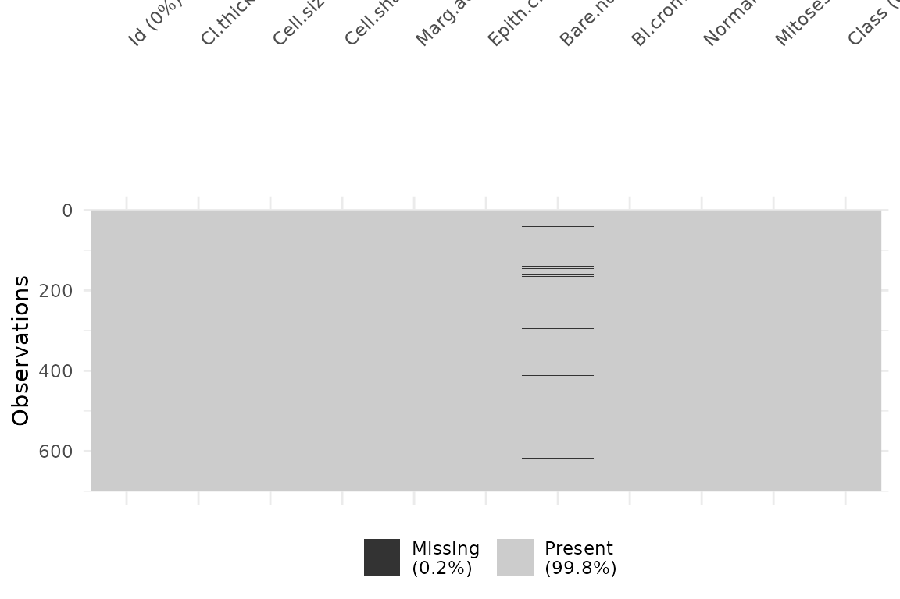
3. Fit and compare three engines
set.seed(7)
n <- nrow(bc_imputed)
train_idx <- sample(seq_len(n), size = floor(0.7 * n))
bc_train <- bc_imputed[train_idx, ]
bc_test <- bc_imputed[-train_idx, ]
bc_model_glm <- tr_fit(bc_train, outcome = "Class", engine = "logistic_reg")
#> Model fitted successfully using engine: logistic_reg
bc_model_rf <- tr_fit(bc_train, outcome = "Class", engine = "random_forest")
#> Model fitted successfully using engine: random_forest
bc_model_xgb <- tr_fit(bc_train, outcome = "Class", engine = "boost_tree")
#> Model fitted successfully using engine: boost_tree
bc_val_glm <- tr_validate(bc_model_glm, newdata = bc_test)
#> Validation metrics (newdata):
#> # A tibble: 5 × 3
#> .metric .estimator .estimate
#> <chr> <chr> <dbl>
#> 1 roc_auc binary 0.997
#> 2 sens binary 0.962
#> 3 spec binary 0.970
#> 4 accuracy binary 0.967
#> 5 brier_score binary 0.0231
#>
#> Confusion Matrix:
#> Truth
#> Prediction benign malignant
#> benign 128 3
#> malignant 4 75
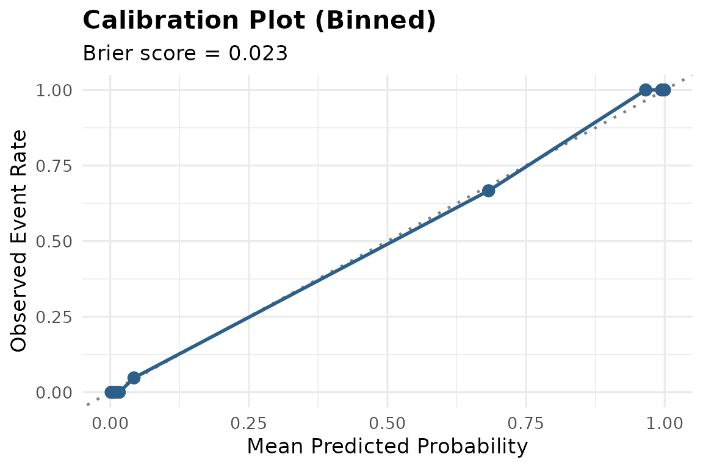
bc_val_rf <- tr_validate(bc_model_rf, newdata = bc_test)
#> Validation metrics (newdata):
#> # A tibble: 5 × 3
#> .metric .estimator .estimate
#> <chr> <chr> <dbl>
#> 1 roc_auc binary 0.990
#> 2 sens binary 0.987
#> 3 spec binary 0.962
#> 4 accuracy binary 0.971
#> 5 brier_score binary 0.0314
#>
#> Confusion Matrix:
#> Truth
#> Prediction benign malignant
#> benign 127 1
#> malignant 5 77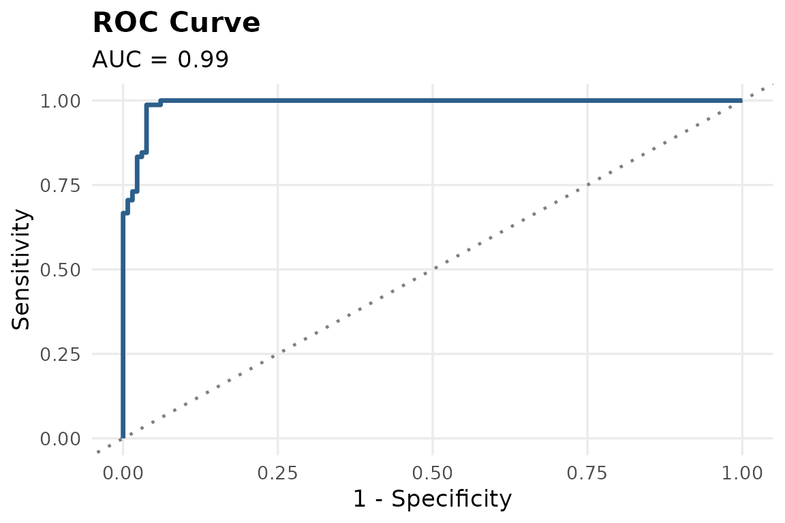
#> `geom_line()`: Each group consists of only one observation.
#> ℹ Do you need to adjust the group aesthetic?
bc_val_xgb <- tr_validate(bc_model_xgb, newdata = bc_test)
#> Validation metrics (newdata):
#> # A tibble: 5 × 3
#> .metric .estimator .estimate
#> <chr> <chr> <dbl>
#> 1 roc_auc binary 0.987
#> 2 sens binary 0.962
#> 3 spec binary 0.947
#> 4 accuracy binary 0.952
#> 5 brier_score binary 0.0329
#>
#> Confusion Matrix:
#> Truth
#> Prediction benign malignant
#> benign 125 3
#> malignant 7 75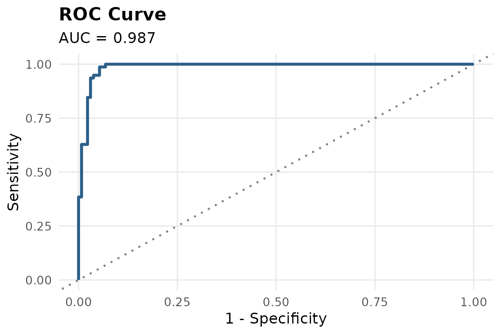
#> `geom_line()`: Each group consists of only one observation.
#> ℹ Do you need to adjust the group aesthetic?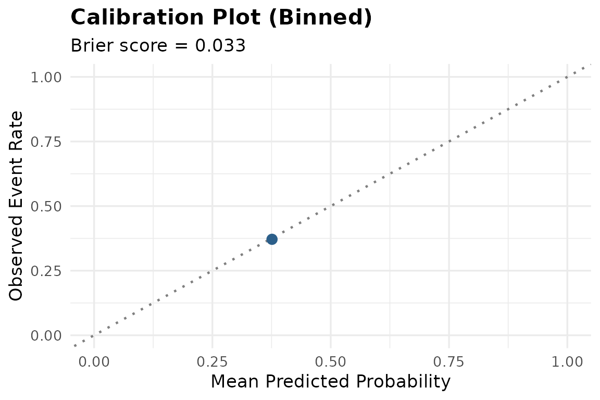
bc_comparison <- dplyr::bind_rows(
dplyr::mutate(bc_val_glm$metrics, engine = "logistic_reg"),
dplyr::mutate(bc_val_rf$metrics, engine = "random_forest"),
dplyr::mutate(bc_val_xgb$metrics, engine = "boost_tree")
)
tidyr::pivot_wider(bc_comparison, names_from = .metric, values_from = .estimate)
#> # A tibble: 3 × 7
#> .estimator engine roc_auc sens spec accuracy brier_score
#> <chr> <chr> <dbl> <dbl> <dbl> <dbl> <dbl>
#> 1 binary logistic_reg 0.997 0.962 0.970 0.967 0.0231
#> 2 binary random_forest 0.990 0.987 0.962 0.971 0.0314
#> 3 binary boost_tree 0.987 0.962 0.947 0.952 0.0329All three engines perform very well on this dataset (AUC > 0.98), reflecting the fact that tumor morphology is highly predictive of malignancy. Notably, logistic regression performs competitively with the more flexible tree-based methods, a reminder that added model complexity does not always yield better clinical performance.
bc_val_glm$roc_plot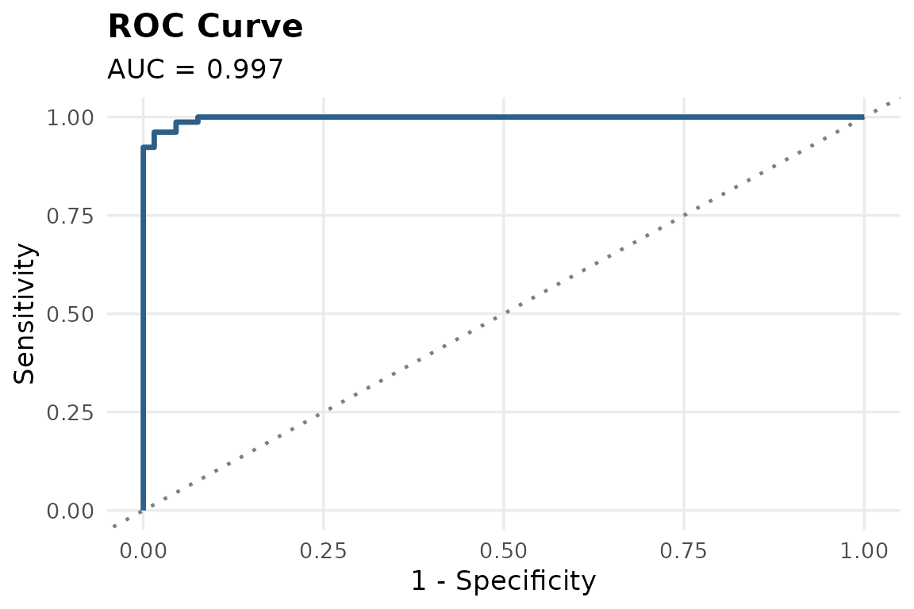
4. Explainability
tr_explain(bc_model_glm, method = "permutation")
#> Warning: Using `size` aesthetic for lines was deprecated in ggplot2 3.4.0.
#> ℹ Please use `linewidth` instead.
#> ℹ The deprecated feature was likely used in the ingredients package.
#> Please report the issue at
#> <https://github.com/ModelOriented/ingredients/issues>.
#> This warning is displayed once per session.
#> Call `lifecycle::last_lifecycle_warnings()` to see where this warning was
#> generated.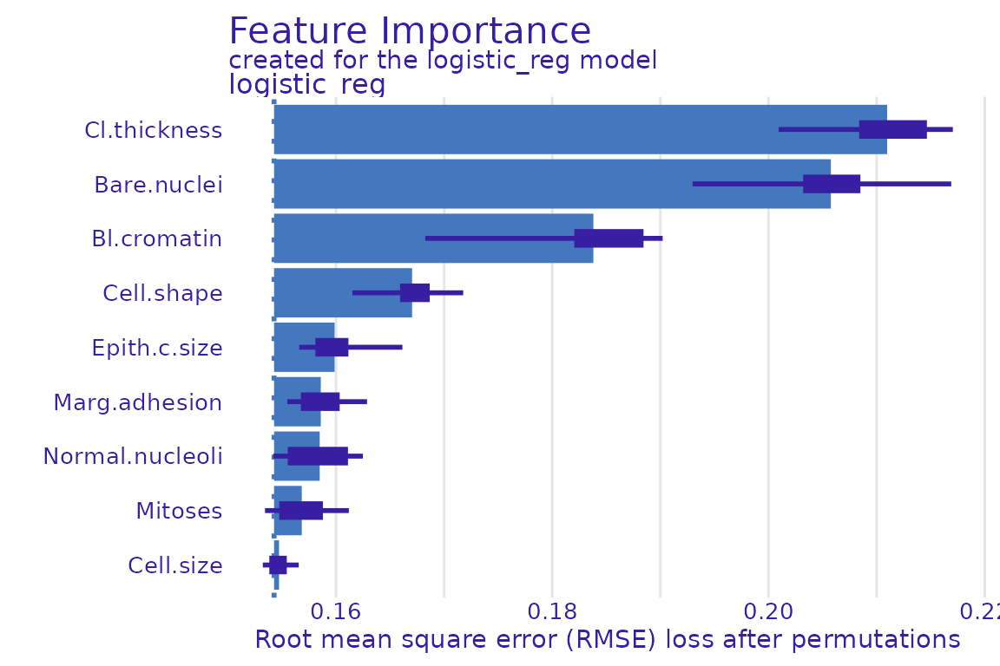
Cell thickness, bare nuclei, and bland chromatin emerge as the strongest predictors which is consistent with established cytological indicators of malignancy.
5. Automated pipeline review: interpreting the leakage flag
bc_review <- tr_agent_review(bc_train, bc_model_glm, use_agent = FALSE)
#>
#> --- triageR Pipeline Review ---
#> [possible_leakage]
#> Predictor 'Cell.shape' alone achieves AUC ~0.97 predicting the outcome. This may indicate data leakage (e.g. the variable is a proxy for or derived from the outcome).tr_agent_review() flags Cell.shape as a
possible leakage concern, since it alone achieves a high AUC predicting
malignancy. This is an important nuance to understand:
the check cannot distinguish between genuine, strong biological signal
and true data leakage (e.g. a variable derived from the outcome itself).
In this case, cell shape is a well-established cytological indicator of
malignancy, not a leakage artifact.
This illustrates the intended role of tr_agent_review():
it flags statistically unusual patterns for human
review, not automatic disqualification. A researcher with
domain knowledge can correctly interpret this flag as expected
biological signal rather than an error.
6. Sensitivity analysis
bc_sensitivity <- tr_sensitivity(bc_train, bc_model_glm)
#> Model fitted successfully using engine: logistic_reg
#> Validation metrics (training_data):
#> # A tibble: 5 × 3
#> .metric .estimator .estimate
#> <chr> <chr> <dbl>
#> 1 roc_auc binary 0.995
#> 2 sens binary 0.957
#> 3 spec binary 0.979
#> 4 accuracy binary 0.971
#> 5 brier_score binary 0.0238
#>
#> Confusion Matrix:
#> Truth
#> Prediction benign malignant
#> benign 319 7
#> malignant 7 156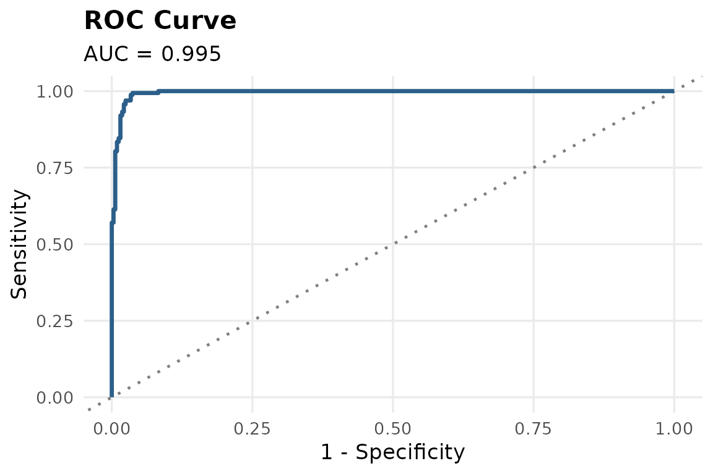
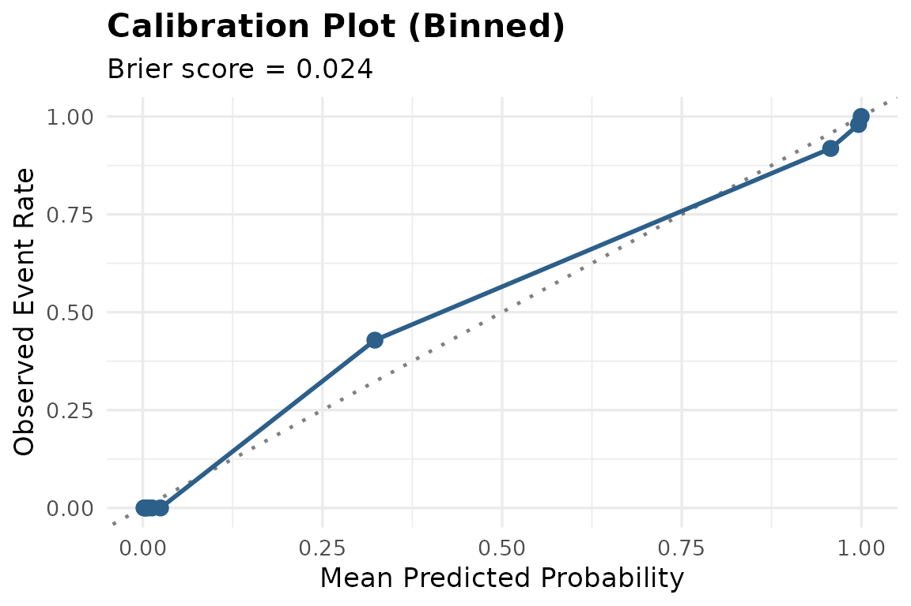
#> Model fitted successfully using engine: logistic_reg
#> Validation metrics (training_data):
#> # A tibble: 5 × 3
#> .metric .estimator .estimate
#> <chr> <chr> <dbl>
#> 1 roc_auc binary 0.994
#> 2 sens binary 0.939
#> 3 spec binary 0.978
#> 4 accuracy binary 0.967
#> 5 brier_score binary 0.0246
#>
#> Confusion Matrix:
#> Truth
#> Prediction benign malignant
#> benign 317 8
#> malignant 7 124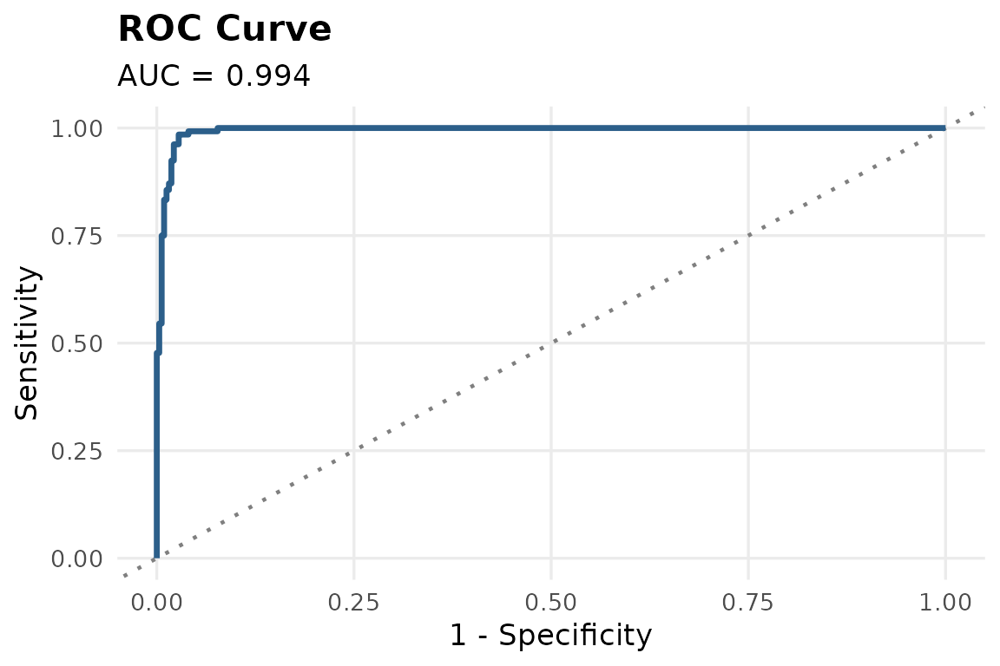
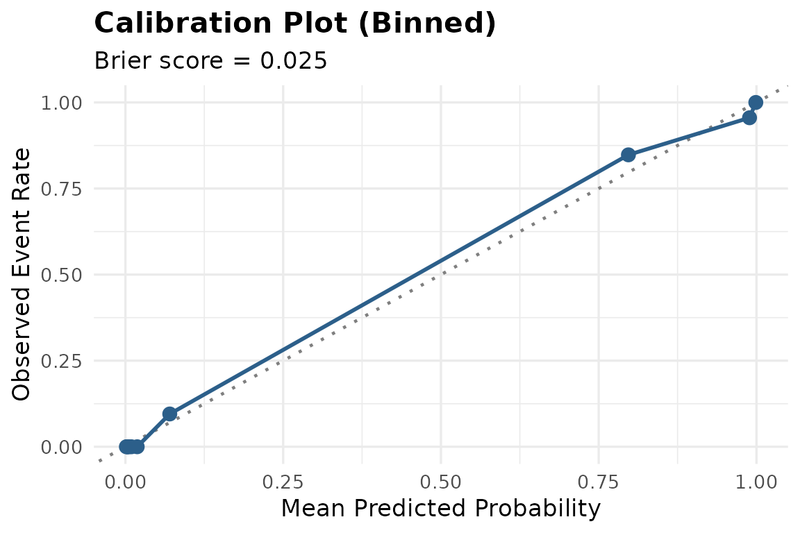
#>
#> --- Sensitivity Analysis Comparison ---
#> # A tibble: 2 × 7
#> scenario .estimator roc_auc sens spec accuracy brier_score
#> <chr> <chr> <dbl> <dbl> <dbl> <dbl> <dbl>
#> 1 complete_case binary 0.995 0.957 0.979 0.971 0.0238
#> 2 outliers_excluded binary 0.994 0.939 0.978 0.967 0.0246
#>
#> Note: Compare AUC/sensitivity/specificity across scenarios. Large swings suggest the model is not robust to that assumption.Performance remains stable across the complete-case and outlier-exclusion scenarios, indicating the model is not overly sensitive to a small number of extreme values or missing-data handling.
Summary
This case study demonstrated triageR’s three-engine comparison workflow on a second real-world clinical dataset, and highlighted an important interpretive nuance in automated pipeline review: statistical flags require clinical context to interpret correctly. triageR is designed to surface these patterns for expert review, not to make final judgments autonomously.